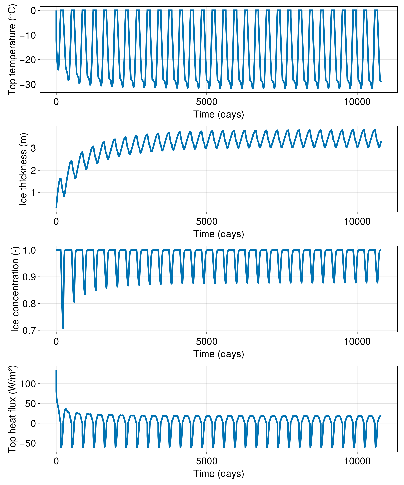

#####
##### The purpose of this script is to reproduce some results from Semtner (1976)
#####
using Oceananigans
using Oceananigans.Units
using Oceananigans.Units: Time
using Oceananigans.OutputReaders
using ClimaSeaIceGenerate a 0D grid for a single column slab model
grid = RectilinearGrid(size=(), topology=(Flat, Flat, Flat))1×1×1 RectilinearGrid{Float64, Flat, Flat, Flat} on CPU with 0×0×0 halo
├── Flat x
├── Flat y
└── Flat z Forcings (Semtner 1976, table 1), originally tabulated by Fletcher (1965) Note: these are in kcal, which was deprecated in the ninth General Conference on Weights and Measures in 1948. We convert these to Joules (and then to Watts) below. Month: Jan Feb Mar Apr May Jun Jul Aug Sep Oct Nov Dec
tabulated_shortwave = - [ 0, 0, 1.9, 9.9, 17.7, 19.2, 13.6, 9.0, 3.7, 0.4, 0, 0] .* 1e4 # to convert to kcal / m²
tabulated_longwave = - [10.4, 10.3, 10.3, 11.6, 15.1, 18.0, 19.1, 18.7, 16.5, 13.9, 11.2, 10.9] .* 1e4 # to convert to kcal / m²
tabulated_sensible = - [1.18, 0.76, 0.72, 0.29, -0.45, -0.39, -0.30, -0.40, -0.17, 0.1, 0.56, 0.79] .* 1e4 # to convert to kcal / m²
tabulated_latent = - [ 0, -0.02, -0.03, -0.09, -0.46, -0.70, -0.64, -0.66, -0.39, -0.19, -0.01, -0.01] .* 1e4 # to convert to kcal / m²12-element Vector{Float64}:
-0.0
200.0
300.0
900.0
4600.0
7000.0
6400.0
6600.0
3900.0
1900.0
100.0
100.0Pretend every month is just 30 days
Nmonths = 12
month_days = 30
year_days = month_days * Nmonths
times_days = 15:30:(year_days - 15)
times = times_days .* day # times in seconds1.296e6:2.592e6:2.9808e7Sea ice emissivity
ϵ = 11Convert fluxes to the right units
kcal_to_joules = 4184
tabulated_shortwave .*= kcal_to_joules / (month_days * days)
tabulated_longwave .*= kcal_to_joules / (month_days * days) .* ϵ
tabulated_sensible .*= kcal_to_joules / (month_days * days)
tabulated_latent .*= kcal_to_joules / (month_days * days)
using CairoMakie
fig = Figure()
ax = Axis(fig[1, 1])
lines!(ax, times, tabulated_shortwave)
lines!(ax, times, tabulated_longwave)
lines!(ax, times, tabulated_sensible)
lines!(ax, times, tabulated_latent)
display(fig)CairoMakie.Screen{IMAGE}
Make them into a FieldTimeSeries for better manipulation
Rs = FieldTimeSeries{Nothing, Nothing, Nothing}(grid, times; time_indexing = Cyclical())
Rl = FieldTimeSeries{Nothing, Nothing, Nothing}(grid, times; time_indexing = Cyclical())
Qs = FieldTimeSeries{Nothing, Nothing, Nothing}(grid, times; time_indexing = Cyclical())
Ql = FieldTimeSeries{Nothing, Nothing, Nothing}(grid, times; time_indexing = Cyclical())
for (i, time) in enumerate(times)
set!(Rs[i], tabulated_shortwave[i:i])
set!(Rl[i], tabulated_longwave[i:i])
set!(Qs[i], tabulated_sensible[i:i])
set!(Ql[i], tabulated_latent[i:i])
end
@inline function linearly_interpolate_flux(i, j, grid, Tₛ, clock, model_fields, flux)
t = Time(clock.time)
return flux[i, j, 1, t]
end
@inline function linearly_interpolate_solar_flux(i, j, grid, Tₛ, clock, model_fields, flux)
Q = linearly_interpolate_flux(i, j, grid, Tₛ, clock, model_fields, flux)
α = ifelse(Tₛ < -0.1, 0.75, 0.64)
return Q * (1 - α)
endlinearly_interpolate_solar_flux (generic function with 1 method)NOTE: Semtner (1976) uses a wrong value for the Stefan-Boltzmann constant (roughly 2% higher) to match the results of Maykut & Unterstainer (196(5)). We use the same value here for comparison purposes.
σ = 5.67e-8 * 1.02 # Wrong value!!
Q_shortwave = FluxFunction(linearly_interpolate_solar_flux, parameters=Rs)
Q_longwave = FluxFunction(linearly_interpolate_flux, parameters=Rl)
Q_sensible = FluxFunction(linearly_interpolate_flux, parameters=Qs)
Q_latent = FluxFunction(linearly_interpolate_flux, parameters=Ql)
Q_emission = RadiativeEmission(emissivity=ϵ, stefan_boltzmann_constant=σ)
top_heat_flux = (Q_shortwave, Q_longwave, Q_sensible, Q_latent, Q_emission)
model = SeaIceModel(grid; top_heat_flux)
set!(model, h=0.3, ℵ=1) # We start from 300cm of ice and full concentration
simulation = Simulation(model, Δt=8hours, stop_time= 30 * 360days)Simulation of SeaIceModel
├── Next time step: 8 hours
├── run_wall_time: 0 seconds
├── run_wall_time / iteration: NaN days
├── stop_time: 10800 days
├── stop_iteration: Inf
├── wall_time_limit: Inf
├── minimum_relative_step: 0.0
├── callbacks: OrderedDict with 3 entries:
│ ├── stop_time_exceeded => Callback of stop_time_exceeded on IterationInterval(1)
│ ├── stop_iteration_exceeded => Callback of stop_iteration_exceeded on IterationInterval(1)
│ └── wall_time_limit_exceeded => Callback of wall_time_limit_exceeded on IterationInterval(1)
└── output_writers: OrderedDict with no entriesAccumulate data
series = []
function accumulate_timeseries(sim)
T = model.ice_thermodynamics.top_surface_temperature
h = model.ice_thickness
ℵ = model.ice_concentration
Qe = model.external_heat_fluxes.top
Qe = ClimaSeaIce.SeaIceThermodynamics.HeatBoundaryConditions.getflux(Qe, 1, 1, grid, first(T), model.clock, model.ice_thickness)
push!(series, (time(sim), first(h), first(T), first(ℵ), Qe))
end
simulation.callbacks[:save] = Callback(accumulate_timeseries)
run!(simulation)[ Info: Initializing simulation...
[ Info: ... simulation initialization complete (1.873 seconds)
[ Info: Executing initial time step...
[ Info: ... initial time step complete (1.469 seconds).
[ Info: Simulation is stopping after running for 9.053 seconds.
[ Info: Simulation time 10800 days equals or exceeds stop time 10800 days.Extract and visualize data
t = [datum[1] for datum in series]
h = [datum[2] for datum in series]
T = [datum[3] for datum in series]
ℵ = [datum[4] for datum in series]
Q = [datum[5] for datum in series]
set_theme!(Theme(fontsize=24, linewidth=4))
fig = Figure(size=(1000, 1200))
axT = Axis(fig[1, 1], xlabel="Time (days)", ylabel="Top temperature (ᵒC)")
axh = Axis(fig[2, 1], xlabel="Time (days)", ylabel="Ice thickness (m)")
axℵ = Axis(fig[3, 1], xlabel="Time (days)", ylabel="Ice concentration (-)")
axQ = Axis(fig[4, 1], xlabel="Time (days)", ylabel="Top heat flux (W/m²)")
lines!(axT, t / day, T)
lines!(axh, t / day, h)
lines!(axℵ, t / day, ℵ)
lines!(axQ, t / day, Q)
display(fig)
save("ice_timeseries.png", fig)
This page was generated using Literate.jl.